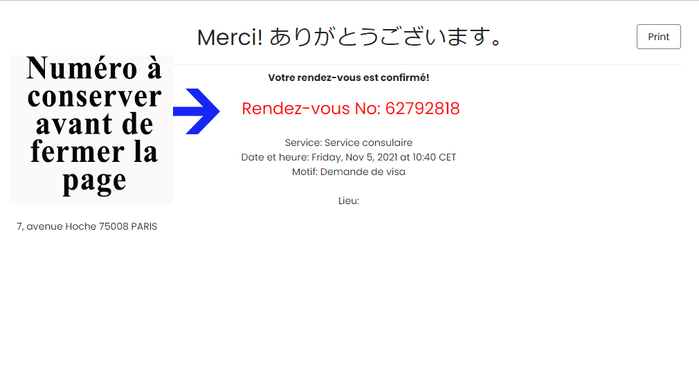

Explications et avertissements sur le système de rendez-vous en ligne dans le cadre d'une demande de visa
Cette procédure en ligne concerne uniquement les rendez-vous en vue de déposer une demande de visa à PARIS.
Pour toute demande de visa à déposer aux consulats de Strasbourg, Lyon ou Marseille, veuillez contacter directement le consulat concerné.
Comment prendre rendez-vous?
Important:
Afin d’assurer une gestion rapide ET efface des demandes de visas et par respect pour les autres demandeurs, l'annulation de tout rendez-vous que nous ne pourriez pas honorer est indispensable au plus tard 48h (jours ouvrés) avant la date prévue du rendez-vous. Nous comptons sur votre coopération.
Etape 1: vérifiez sur la page visas/ démarches que vous faites bien partie des personnes autorisées à déposer une demande.
Etape 2: réunissez l'intégralité des documents spécifiés sur la page dédiée ou sur le courriel de notre Ambassade (dans le cas de visa pour circonstances exceptionnelles).
Etape 3: effectuez la procédure en ligne de demande de rendez-vous en prenant garde de bien conserver, avant de fermer la page, le numéro de rendez-vous (capture d'écran, impression papier, ou numéro noté sur le support de votre choix) apparaissant en rouge et en caractères gras à la dernière page du processus.
Le numéro n'apparait qu'une seule fois. Aucun courriel ou sms de confirmation ou de rappel ne vous sera envoyé.
Etape 4: après avoir attentivement pris connaissance des informations relatives au jour de rendez-vous et aux modalités d'annulation ci-dessous, vous pouvez procéder à la demande de rendez-vous en vous rendant au bas de la page.
Pour prendre rendez-vous aux consulats de Strasbourg, Lyon ou Marseille, veuillez contacter directement le consulat concerné.
Le jour du rendez-vous
En cas d'impossibilité de le présenter, vous devrez faire la queue dans la file "sans rendez-vous" (ouverte uniquement jusqu'à 11h00) et ne serez pas prioritaire pour le dépôt de votre demande.
Le passage au guichet des visas dépendant des numéros de rendez-vous, nous vous prions d'arriver à l'heure.
Nous prions les demandeurs de visa de bien vouloir se présenter non accompagnés (sauf pour les personnes à mobilité réduite).
Veuillez utiliser le gel hydroalcoolique à disposition et dans la mesure du possible apporter votre propre stylo.
Annuler ou reprogrammer un rendez-vous
En cas d'imprévu, pensez à annuler votre rendez-vous! Vous pouvez le faire en nous adressant un courriel à l'adresse suivante: rdv.visa@ps.mofa.go.jp
Merci de juste y préciser votre numéro, la date, l'heure de votre rendez-vous et d'inscrire "Annulation" dans objet.
Pour reprogrammer un rendez-vous, il suffit d'annuler le rendez-vous
déjà pris et en prendre un nouveau en suivant la procédure.
Commencer la procédure de prise de rendez-vous
Pensez à cliquer sur "Suivant" en bas à droite pour accéder, après lu attentivement les consignes, au calendrier de rendez-vous!